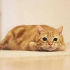
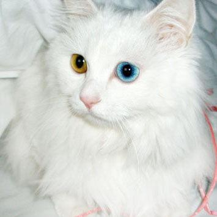
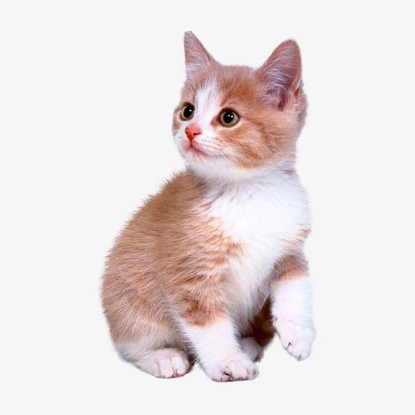
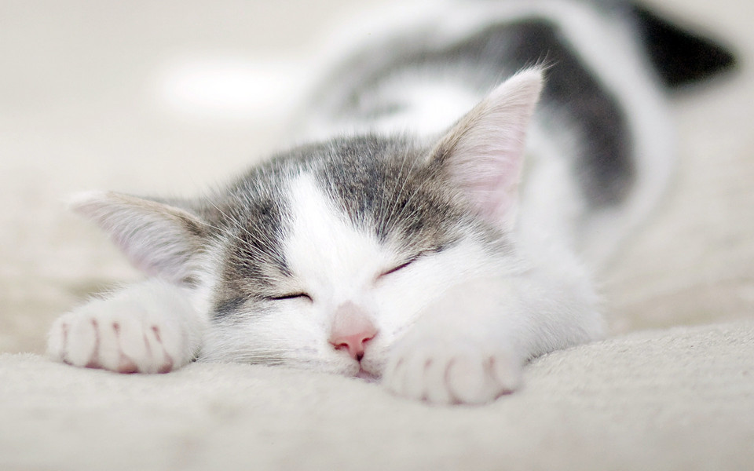
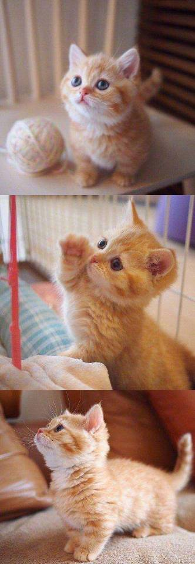

喵喵星球网
|
 外形和特点 |
 眼睛颜色 |
 特有体型 |
 年龄与寿命 |
 被毛颜色和斑纹 |
|  |
猫的身体分为头、颈、躯干、四肢和尾五部分，大多数部位披毛，少数为无毛猫。 猫的趾底有脂肪质肉垫，因而行走无声，捕鼠时不会惊跑鼠，趾端生有锐利的指甲。爪能够缩进和伸出。猫在休息和行走时爪缩进去，只在捕鼠和攀爬时伸出来，防止指甲被磨钝。猫的前肢有五指，后肢有四指。猫的牙齿分为门齿、犬齿和臼齿。 犬齿特别发达，尖锐如锥，适于咬死捕到的鼠类，臼齿的咀嚼面有尖锐的突起，适于把肉嚼碎；门齿不发达。 猫的头通常为圆型，脸或圆或尖，大而圆的眼睛根据被毛不同而呈现各种颜色。猫眼在夜晚受光源影响具有反光性，眼的瞳孔会随光线的强弱而调节大小。猫眼多数为同色眼，而有少数的猫具有异色。 猫的嘴唇上和脸上分布着几十根细小的胡须，耳朵有立耳，也有一些宠物猫为折耳。猫的前肢为五趾，后脚为四趾，脚掌上有厚厚的肉垫，这决定了它从高处下落的时候起到减震缓冲与消音的作用。 猫的爪子弯曲而锋利，爪能自由伸缩，平时缩在脚掌中在抓捕的时候则会瞬间亮出来。猫的尾巴较长，全身布满深厚的毛，也有一种无毛猫身。 |
| 虽然猫眼睛的颜色(虹膜的颜色）有深浅之分，但大体上可分为铜色、浅茶色绿色、蓝色4种。此外还有一些特例，比如基因突变导致黑色素缺乏引起的“白化症”，会让猫的眼睛看起来呈红色；还有左右双眼颜色不一的“虹膜异色”。另外刚出生不久的幼猫虹膜色素还未沉积，因此不管是什么品种，眼睛多半会是蓝色。这就是所谓的“幼猫蓝(Kitten Blue)”。 | |
|
猫的体型按照骨路利肌肉的构成、爪子的长度等可划分为几类。 以波斯猫为代表的“短身体型”：体型短小，肩部、腰部浑圆结实，尾巴较短；以遇罗猫为代表的“东方体型”：脸部呈倒三角形，四肢纤长，尾巴像鞭子一样。 从这两类猫中还能再细分出“不完全短身体程”“不完全外国体型”“外国体型”。除了这五类以外，还增加了身体结实的第六类“长型——大型体型”。现在，猫的基本体型都是按照这六类进行区分的。 |
|
|
猫的寿命通常为10-16年，流浪猫的寿命通常为4-6年，饲养在室内的宠物猫则可存活14-18年，可见猫的寿命会因环境的不同而存在巨大的差异。 一般来说，出生后1年左右的猫即为具备生殖能力的成年猫，7岁左右会进入高龄期。 另外，吉尼斯世界纪录记载的世界上最长寿的猫，是一只生活在美国得克萨斯州、名叫“泡芙”（1967-205年）的猫。它活了38岁零3天，换算成人类的岁数相当于168岁左右，非常长寿。 |
|
|
猫的被毛因品种和个体而异，毛色、毛质、斑纹（花样)多种多样这种差性是由父母双方控制毛色的基因共同决定的，具体的遗传机制尚不明确。 被毛整显现的基本颜色即是基础色，除“白色”“黑色”“巧克力色”“浅茶色”“红茶色以外，还有毛色突变形成的“淡色”。 此外还有几种配色：在基础色上散布着红色系的被毛，这种配色被称为“我理”（日本将这种配色的猫称为锈色猫)；被毛上有各种颜色的条纹花样，这种配色被称为“虎斑（条纹花样”；仅耳朵、面部、四肢的顶端、尾巴的毛色较深，这种配色被称为“重点色”；仅身体一部分是白色被毛,这种配色被称为“白斑”；在基础色之下还有银色或金色的毛色混杂，这种配色被称为“多层色”。 总之，猫的被毛颜色和斑纹变化有着多种多样的类型。 |
| 首页 | 上一页 | 8 | 下一页 | 尾页 |
网页底部